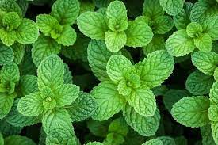

PLANTAS MEDICINALES
| Planta Medicinal | Información |
|---|---|
Aloe Vera  |
El Aloe Vera es una planta suculenta conocida por sus propiedades medicinales. Se encuentra comúnmente en regiones tropicales y se ha utilizado durante siglos en diversas culturas debido a sus propiedades curativas. Se utiliza principalmente para tratar quemaduras, cortes, irritaciones de la piel, así como para promover la salud digestiva cuando se consume internamente. Tiene propiedades antiinflamatorias, antibacterianas, antioxidantes y cicatrizantes. Se puede aplicar directamente sobre la piel en forma de gel o se puede consumir en forma de jugo o suplemento. |
| Arnica |
Arnica es una planta herbácea que se encuentra principalmente en regiones montañosas de Europa y América del Norte. Se utiliza para aliviar el dolor, reducir la inflamación y tratar contusiones, dolores musculares y articulares. Tiene propiedades analgésicas y antiinflamatorias. Se puede aplicar externamente en forma de gel, crema o tintura. No se recomienda su consumo interno debido a su toxicidad. |
| Hierbabuena  |
La hierbabuena es una planta aromática perteneciente a la familia de la menta. Se utiliza para aliviar problemas digestivos como indigestión, náuseas y flatulencia, así como para refrescar el aliento. Tiene propiedades carminativas, antiespasmódicas y refrescantes. Se puede consumir en forma de té, infusiones o se puede agregar fresca a alimentos y bebidas. |
| Bugambilia |
La bugambilia es una planta trepadora con flores que se encuentra comúnmente en climas tropicales y subtropicales. Se utiliza tradicionalmente para tratar problemas respiratorios como tos, resfriados, gripe y bronquitis. Tiene propiedades expectorantes, antiinflamatorias y antioxidantes. Se prepara en forma de infusión con las flores y se consume caliente. |
| Eucalipto |
El eucalipto es un árbol originario de Australia, conocido por su aroma característico y sus propiedades medicinales. Se utiliza para aliviar la congestión nasal, tratar infecciones respiratorias, aliviar dolores musculares y mejorar la salud bucal.
Tiene propiedades descongestionantes, antiinflamatorias, antibacterianas y analgésicas. Se puede utilizar en forma de aceite esencial para inhalaciones, en cremas o ungüentos para masajes, o se pueden hacer infusiones con las hojas. |
Flor de Tila  |
La flor de tila proviene del árbol Tilia, también conocido como tilo. Se utiliza para aliviar el estrés, la ansiedad, el insomnio y para promover la relajación.
Tiene propiedades sedantes, calmantes y antioxidantes. Se prepara en forma de infusión con las flores y se consume caliente. |
| Girasol |
El girasol es una planta cultivada por sus semillas y su aceite. Las semillas de girasol son ricas en nutrientes como vitamina E, ácidos grasos y antioxidantes, y se utilizan para mejorar la salud cardiovascular, reducir el colesterol y promover la salud de la piel.
Tienen propiedades nutritivas, antioxidantes y antiinflamatorias. Las semillas se pueden consumir crudas, tostadas, o se pueden agregar a ensaladas, yogures o batidos. |
| Lavanda |
La lavanda es una planta aromática conocida por su fragancia relajante. Se utiliza para aliviar el estrés, la ansiedad, el insomnio, así como para aliviar dolores de cabeza y mejorar la salud de la piel.
Tiene propiedades sedantes, relajantes, analgésicas y antisépticas. Se puede utilizar en forma de aceite esencial para aromaterapia, en forma de infusión, o se puede aplicar sobre la piel en forma de aceite o crema. |
| Manzanilla |
La manzanilla es una planta herbácea conocida por sus propiedades calmantes y digestivas. Se utiliza para aliviar problemas digestivos como indigestión, cólicos y náuseas, así como para calmar el estrés y promover el sueño.
Tiene propiedades antiinflamatorias, antiespasmódicas, calmantes y antioxidantes. Se prepara en forma de infusión con las flores y se consume caliente. |
| Jengibre |
El jengibre es una raíz utilizada como especia y en la medicina tradicional. Se utiliza para aliviar problemas digestivos como náuseas, indigestión y gases, así como para reducir la inflamación, fortalecer el sistema inmunológico y aliviar dolores musculares y articulares.
Tiene propiedades antiinflamatorias, antioxidantes, analgésicas y estimulantes. Se puede consumir fresco, seco, en polvo, en forma de té, en jugos o en cápsulas como suplemento. |